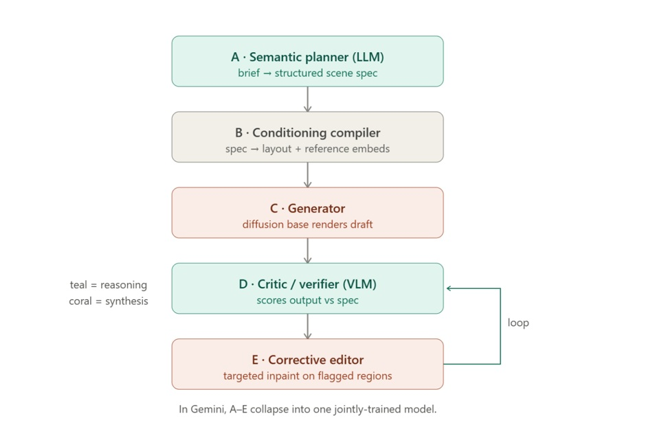
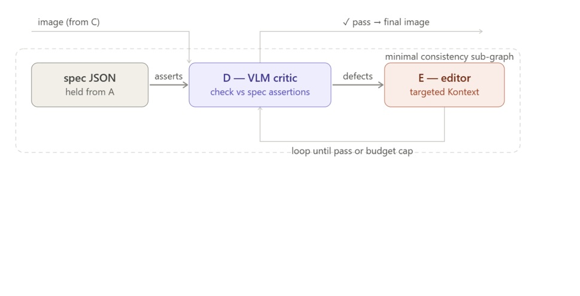

Narrazioni · Comparison · DEEP TECHNICAL
Gemini vs ComfyUI (Open source): a comparison
A two-line Gemini prompt often beats a hand-built 50-node ComfyUI pipeline for simple shots. ComfyUI only wins once you add back what Gemini already does internally: a judge that checks the image against a spec, and an editor that repairs only what fails.
A working note on why a two-line Gemini prompt often outperforms a 50-node ComfyUI pipeline built by hand. The gap is not the level of detail in the prompt — it's a missing piece: a critical level that reads the generated image back against a structured spec, and a corrective editor that repairs only what fails, in a closed loop. This post reconstructs that architecture as an open graph (nodes A–E), isolates the minimal sub-graph that actually guarantees consistency, explains why ComfyUI's own execution model can't run the loop natively, and walks through how the critical node reasons, step by step, down to the instruction it hands the editor.
-
01
Why a short prompt (launching a Google tool Gemini) beats a 50-node pipeline
"The pipeline built in the first two parts of this course — part one and part two — is a ComfyUI graph generated with Claude's help: 50+ nodes, IP-Adapter and ControlNet chains, KSampler loops. A fairly complex structure, not uniquely defined, which requires trial-and-error configuration to produce good results. Even pushing it further with Python integration — it still falls short of a one-shot solution like Gemini's. Whereas giving Gemini two lines of instructions and a couple of reference images consistently delivers a richer, more coherent scene than the best standard ComfyUI result (the one used throughout this course)."
Gemini's first winner move is to turn a plain-language scene description into a structured specification — an LLM step, not a ComfyUI function. The result reads like a stricter, LLM-authored version of what
shots_config.pyalready does by hand in this course's pipeline1: subjects with bound attributes, spatial relations, camera and lens, lighting, style anchors. Gemini's version goes further, because an LLM parses the informal brief in more depth than a fixed config schema can — every implied reference gets pulled out and named explicitly before a single pixel is drawn.But that structured spec is not, by itself, the answer to why two lines are enough. If it were only a matter of a richer description, a sufficiently detailed prompt fed into this course's own pipeline should close the gap — and it doesn't, reliably. The real difference sits one and two steps further down the chain: a node that checks the rendered image against the spec, and a node that repairs only the parts that fail. Everything from here is about isolating and explaining those two nodes.
-
02
An open reconstruction: nodes A to E
Gemini doesn't expose these steps as separate nodes — inside it, A–E are one jointly-trained model. Reconstructed as an open graph, so it can be rebuilt with the tools this course already uses (a diffusion base, IP-Adapter, ControlNet, an external LLM/VLM call), the pipeline looks like this:

-
03
The five nodes, one by one
- A — Semantic planner. An LLM turns the raw brief into structured JSON, not prose — subjects with bound attributes, spatial relations, camera/lens, lighting, style anchors. This is the single biggest lever in the whole graph. For a real location or object, retrieval can pull reference images in at this stage, so the model isn't guessing at world knowledge it never saw.
- B — Conditioning compiler. Turns that spec into control signals: regional/attention conditioning so attributes bind to the right subject, a rough draft rasterized to depth/canny for composition, and reference embeds (IP-Adapter, Flux Redux/Kontext) for identity. This is exactly this course's existing IP-Adapter/ControlNet stack — but now driven by a plan instead of hand-set values.
- C — Generator. The diffusion base — Flux, in this course's pipeline — renders the draft image from B's control signals. Nothing new here: this is the KSampler/VAE chain already covered in parts one and two.
- D — Critic. A VLM checks the draft against the spec, assertion by assertion — exactly one figure? shirt red? text spelled correctly? — and returns a structured defect list with severities. This closed check is the piece almost no hand-built Flux pipeline has, and it is the mechanism behind every serious result in the published literature on this topic.
- E — Corrective editor. Applies targeted edits only to the flagged regions, via Kontext or inpainting, then loops back to D — until the image passes, or the iteration budget runs out.
-
04
The minimal sub-graph that actually guarantees consistency
Only three things carry the consistency guarantee: the spec JSON held from A, node D, and node E — plus the back-edge from E to D. B and C matter for the quality of any single draft, but once a draft exists, consistency across a sequence of shots lives entirely inside this closed loop.
The spec is what closes the loop rather than leaving it open: D does not judge the image in isolation, it checks it against specific assertions derived from A's structured output. Take the spec away and D degrades to unconstrained aesthetic taste — useless for automated correction. Take D away and there's no way to tell a passing region from a failing one. Take E away and the system can detect problems but never fix them. Take the back-edge away and you get one correction pass with no guarantee of convergence. The loop exits when D reports that every high-severity assertion has passed, or when the iteration counter hits its cap — whichever comes first.
-
05
Why ComfyUI can't run this loop natively
ComfyUI executes a topological sort of a fixed graph at queue time. There is no native conditional back-edge — no node can say “run D and E again” and have the queue obey. What the community calls a “loop” in ComfyUI is really one of two things: an unrolled fixed-N chain (D₁→E₁→D₂→E₂…, where every node runs regardless of whether it's needed), or a loop that quietly lives outside ComfyUI altogether. The unrolled version wastes compute on passes the image didn't need, and becomes unmanageable past two or three repetitions — there's no way to stop early when D already passed.
The right answer, for a pipeline already built the way this course builds one, is to keep the loop in Python and use ComfyUI purely as GPU compute — called through its API, exactly the pattern
patcher.pyandsweep.pyalready use in the third part of this course. A Pythonwhileloop calls the VLM critical node, decides whether to call ComfyUI's API again for a targeted inpaint, and stops on its own condition — something no arrangement of nodes inside the graph itself can do. -
06
How the critical node reasons, from image to instruction
Every call to the critical node hands the VLM two things at once: the full spec from A as text, and the rendered image. The spec is the contract, the image is the evidence — the critic's entire job is to check one against the other. What follows is not a fixed sequence of separate tools; it's one reasoning process inside a single model call, described here in the order its conclusions become available — from the minimal sub-graph isolated above, this is what actually happens inside D before it hands anything to E.

-
07
From reading the image to writing the fix
- Reading the image at all. Before any of this starts, the image is split into a grid of small patches — roughly 4,000–5,000 of them for a megapixel-scale image — and each patch is turned into a vector that shares the same mathematical space as the model's text tokens. This is the foundation everything below relies on: it lets the model's attention mechanism treat “the patches showing a face” and the word “woman” from the spec as comparable objects.
- Locating each subject. When the critical node reads “woman” in the spec, it compares that concept against every patch in the image and finds where the match is strongest — in effect, pointing at where it believes the woman is, sometimes literally outputting coordinates. This step is weakest on subjects that are small, partly hidden, or described in words with no clear visual equivalent (“a fifty-year-old waiter” has no fixed shape to look for).
- Reading each attribute. Once a subject is located, the critical node reads off its actual attributes — colour, count, position relative to another subject, any text visible in the scene. These are not equally hard: colour is nearly always read correctly, since it shows up directly in the patch's raw visual signal; counting is harder, because it means finding every instance rather than one; relative position (“left of”, “behind”) is the hardest, since it means holding two locations in mind at once and comparing them; legible text is fragile unless the model has a way to zoom into sub-regions at higher resolution, because letterforms are smaller than a single patch.
- Comparing what it saw to what was asked for. With the spec's target value and its own observation both now in the same context — “weathered green paint” against “kiosk appears blue” — the critical node runs what is essentially a reading-comprehension check: does the second sentence satisfy the first? This is the most reliable part of the whole process, because by this point the hard perceptual work is done and what's left is a purely linguistic comparison, which language models are good at.
- Deciding how much a mismatch matters. A wrong subject count is judged far more damaging than a slightly-off colour, and the critic's own system prompt states that ranking explicitly, so a count error is always caught and flagged before a cosmetic one. The judgment also leans on everything the model absorbed, during training, about how people write quality reviews and grading rubrics — which is why a larger, more thoroughly trained critical node tends to grade defects more sensibly than a small one. Left unchecked, a critical node tends to over-flag — language models trained to be thorough default to calling everything serious — so the instruction that keeps this in check is an explicit “be conservative, a false alarm costs a wasted repair pass.”
- Drawing the box around the problem. This is the hardest step in the whole chain, and the one the rest of the loop depends on most directly: a loose or wrong box produces a repair mask that either misses the defect or damages good content next to it. The patch grid itself sets a hard floor on precision — a defect smaller than one patch simply can't be boxed tightly. A defect confined to one figure gets a small, useful box; a defect that's really about the whole image (a wrong overall colour cast, say) has to be marked with a full-frame box and capped at a lower severity, precisely so the editor doesn't try to repaint the entire frame over one bad hue.
- Writing the instruction E will follow. The last thing the critical node produces is a short imperative — “remove the second figure on the right”, “recolour the kiosk to weathered dark green” — built from the failing assertion, what was actually observed, the box, and the spec's original target. This instruction, together with the original scene description, is what E receives: the positive content to keep, plus an explicit list of what to change. That combination is the same mechanism behind instruction-guided image editing generally — the correction steers the repair only where it's needed, leaving the rest of the frame untouched.
Every one of these seven reads happens inside one VLM call, not six separate tool invocations — there is no code to inspect here, only a reasoning trace. The value of walking through it is knowing where the loop is most likely to fail: on small or occluded subjects, on fine spatial relations, and above all on the bounding box, which is what decides whether E's repair helps or hurts.
-
08
When it's actually worth building
In practice, this whole architecture is a recipe for a more efficient, more automatic image-generation loop. It doesn't look like the right fit for a one-off, hand-curated project — the kind of single-storyboard, single-sequence work this course's earlier examples are built around, where a human already looks at every frame and corrects it directly. Where it does earn its cost is production at scale for a defined market: any pipeline that has to generate and self-correct many sequences without a human reviewing each frame is exactly the case the D–E loop was built for, and exactly where ComfyUI's not optimized tuning (and lacking auto-correction) stops scaling.
-
See the third part of this course for the full field list used in
shots_config.py: wall/environment, framing, focal length, angle, objects, positive and negative prompt fields, and per-shot weights. Gemini's internal spec covers the same ground, generated by an LLM rather than filled in by hand for each shot. ↩
FAQ
Is ComfyUI harder to learn than prompting Gemini? Yes, for a one-off image. The pipeline built across this course's first two parts runs 50+ nodes, IP-Adapter and ControlNet chains, and KSampler loops that need trial-and-error tuning — a two-line Gemini prompt gets a comparable single result much faster.
Can ComfyUI run that same generate-judge-correct loop natively? Not on its own. ComfyUI executes a fixed graph with no native conditional back-edge, so nodes can't perform loops. The practical fix is to keep the loop in Python — call ComfyUI's API for each pass — rather than trying to decompose it as nodes.
When is it actually worth building this architecture instead of just using Gemini? Not for a one-off, hand-curated project where a person already reviews every frame. It earns its cost at extended production scale: any pipeline that has to generate and self-correct many sequences without a human checking each one.
Related: What is ComfyUI for the node basics, and ComfyUI Visual Stories — Concepts for how this course's own pipeline builds consistency without this loop.